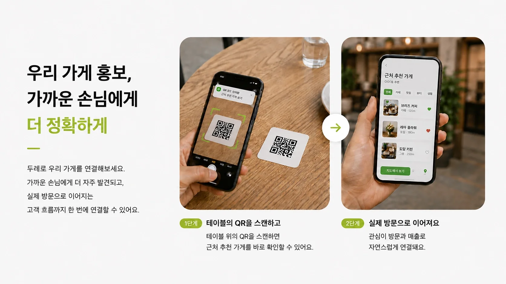
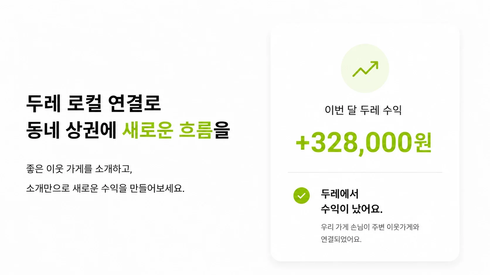
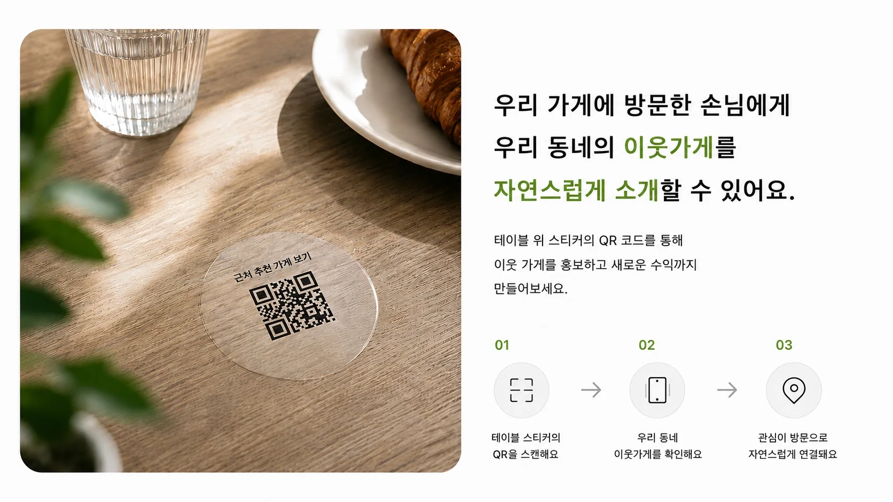
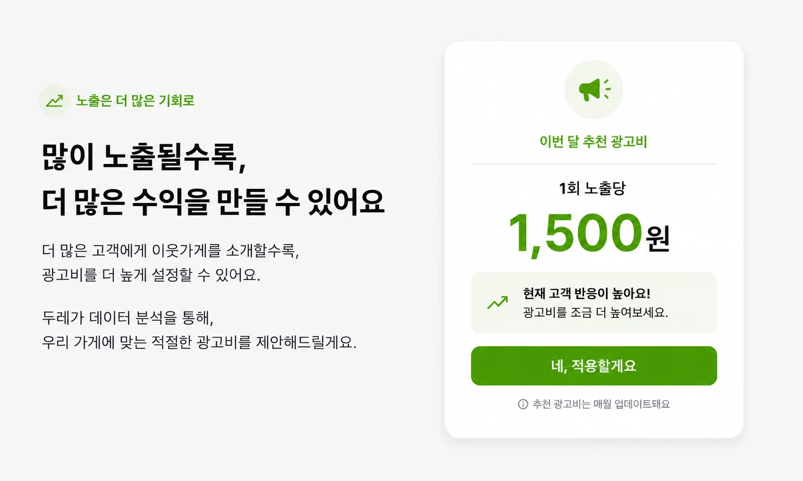
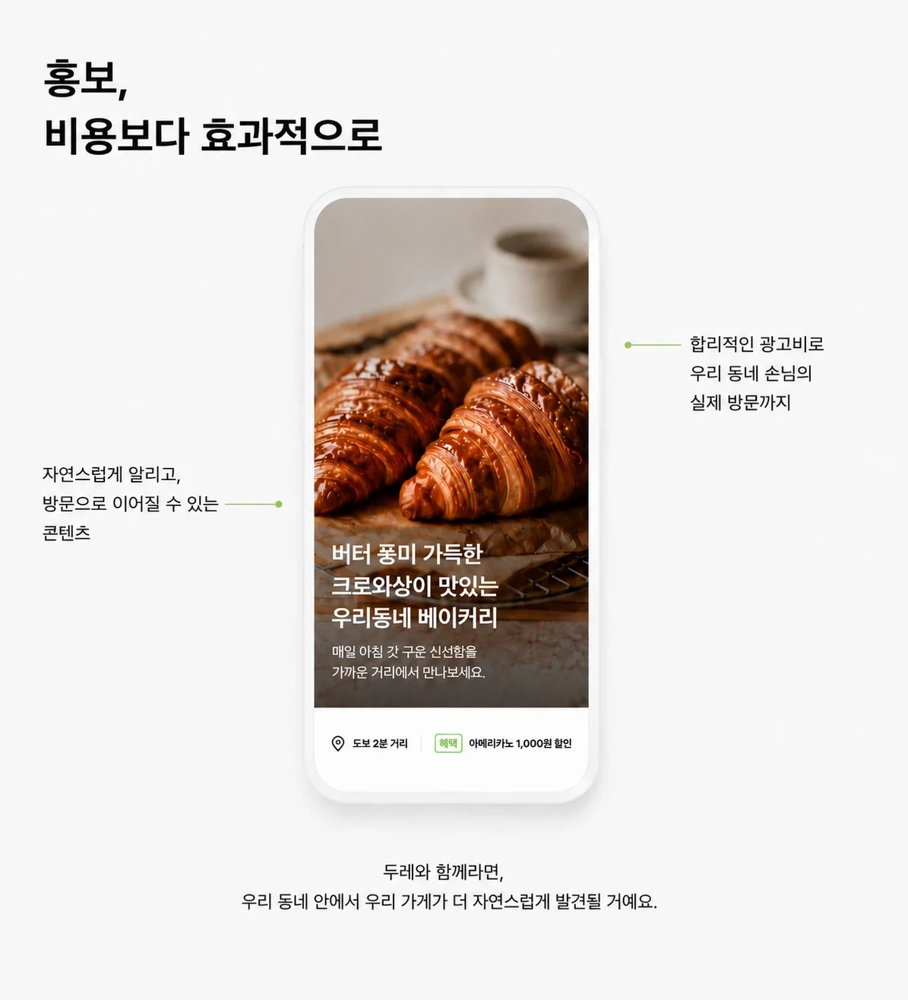
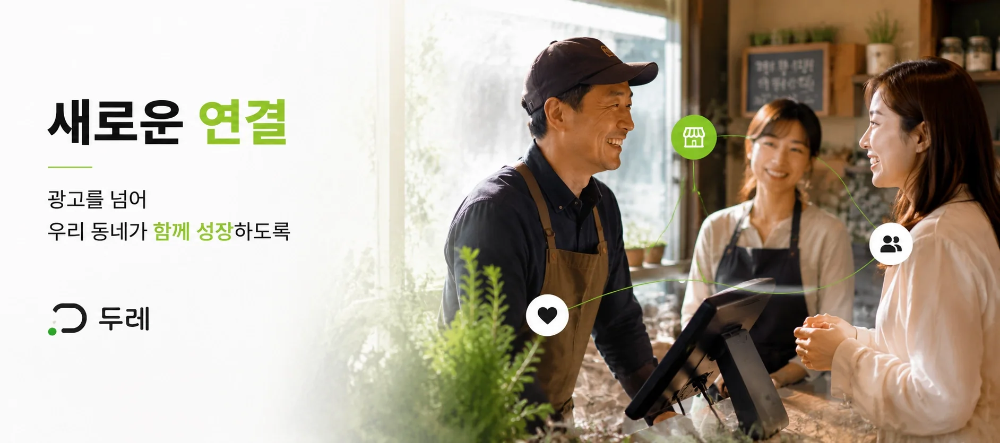

가족가게
손님에게 이웃가게를 소개하고
새로운 수익을 만드세요.
가입비 없이 시작하고, QR 스티커는 무료로 제작합니다. 신청은 1분이면 충분합니다.
우리 동네 안의 손님과 더 쉽게 연결하고,
실제로 방문 가능한 고객 흐름에 집중하세요.
테이블 위 QR 하나로 손님의 관심을 가까운 이웃가게 방문까지 연결합니다.

우리 가게 손님에게 좋은 이웃가게를 소개하고, 소개를 새로운 수익으로 바꿉니다.



우리 동네 안에서 실제 방문으로 이어질 가능성이 높은 고객에게 가게를 소개합니다.

